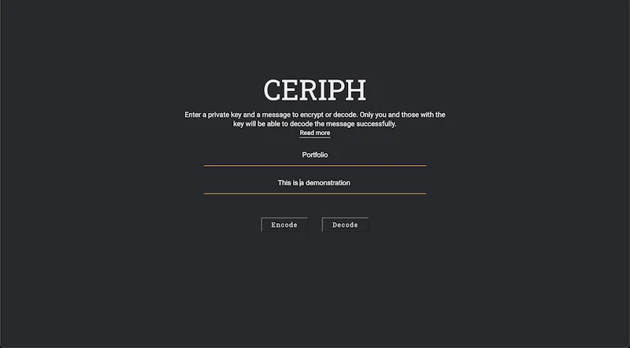

Ceriph is an application that allows encryption and decryption of messages using a simple substitution cipher. Built with React and styled-components. 
After a visit to the fantastic Bletchley Park I was inspired to read up and learn about ciphers and code breaking. As I was learning I built a simple app to encrypt and decrypt messages using a substitution cipher. It uses one of the most simple ciphers possible but it was a great joy to take a process I was reading about and implement it dynamically in Javascript.
Continued development is in process and as I learn more about more sophisticated encryption methodology I am planning to add a variety of ciphers to choose from and additional information to learn more about the history of each.